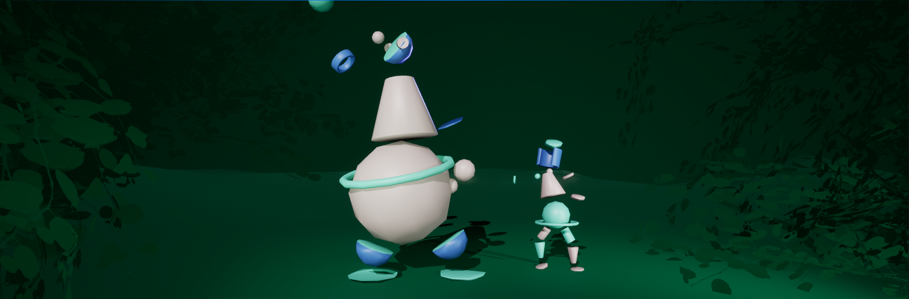
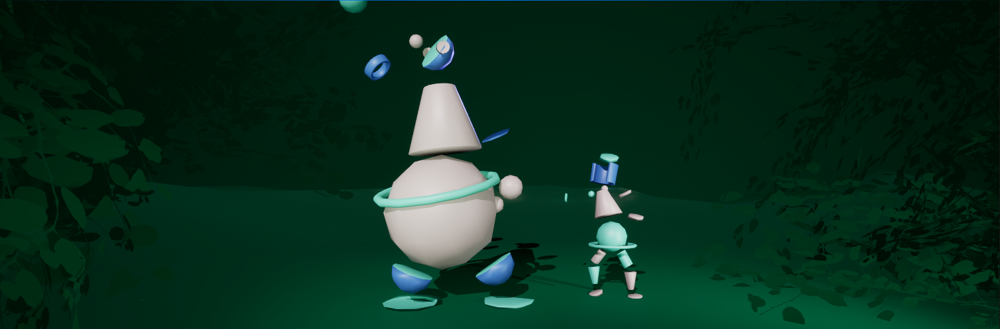

Intro 3D Final Folder Assignment
Note : Final submission only in Inspera
Final folder examination comprises of two parts, and it's important to note that you are permitted to use materials and resources from Part 1 for Part 2.
Part 1 - Game Environment creation
Note : For this part of the task you are not allowed to download any material other than textures.
In this part of the folder assignment you will be creating a game environment of your choice. In this assignment you should demonstrate unique asset creation, textures, animation and other techniques to create game environments. This environment should be made impactful and efficiently in a way that is optimized for use in game engines. The final result should demonstrate proper techniques to create a game environment using the tools available in Blender and Unreal Engine
You need to create an environment in Unreal. The environment should contain different game assets, including static meshes, one or more animated characters, and materials. Populate the environment with the game elements. You may duplicate the elements to populate the scene.
Develop game assets (Lowpoly) using clean modeling techniques with proper unwrapping and textures
You need to Model a minimum of 5 unique elements for your environment. Each one of these must be a unified model. (There should not be any open face, manifold faces or hidden faces).
You need to unwrap all the models. Apply different textures to the objects.
Textures can be downloaded from the internet and created in any way you want. But the size of the texture should not be more than 2048 pixels (2K) in height and width and not less than 512pixels. All the textures should be in PNG / JPG and powers of two (512, 1024, 2048).
All game elements should have minimum 2 textures (Color map and Normal map). Other textures like, metallic, roughness, transparency, Ambient Occlusion , Emissive etc are optional.
There should be minimum one character besides the 5 game elements. And it should be low poly character. (should not be more than 7000 Triangles). The character should be rigged and animated using a basic rig
Import all the game elements including the animated character into unreal and develop a scene.
Develop game shaders in unreal.
Light up the environment properly and bake all the lights in unreal.
Create a Real-time walk-through of the environment.
Render the walk-through to a video
Part 2 - Interactive Game Environment
Note : For this task, you have the freedom to download various individual 3D assets such as models, textures, and animations. However, downloading an entire scene and blueprints to complete the task is not permitted.
The second part of the assignment involves transforming the existing Unreal scene you've constructed in Part 1 into an interactive one. You should explore various interactive elements and implement them in Unreal using Blueprints. Your task should include a minimum of three different interactive features, and you have the flexibility to choose the specific interactions you'd like to incorporate. Implement multiple ways of interacting with your scene.
Interactions could include: pushing, shooting, opening, climbing, throwing or anything else you would imagine doing in your game.
At least 2 ways of interacting with your scene has to be made from scratch using blueprints.
There should be a connection between some of your interactions and the objects or situations they apply to.
In addition to the ones you make yourself you may also import systems and blueprints found online.
Make sure to credit all sources and clearly document what you did and did not make yourself in the reflection note. This includes tutorials and snippets of code found online as well as the assets directly imported to unreal.
Proper lighting of the scene is also required.
The inclusion of an animated character is optional and not mandatory.
Deliverables:
Part 1 - Game environment creation
Assets with textures for the environment (Blend files & textures).
Animated Game character with textures (Blend files & textures)
SketchFab link for textured Game assets and character
A completed optimized scene with animated character in Unreal including assets
A rendered walkthrough video footage in mp4 format with 1920 x 1080 pixels resolution
A Reflection note with minimum 500 words in PDF
Part 2 - Interactive Game Environment
A completed optimized scene with blueprint interactions.
Executable file of the unreal scene.
A Reflection note with minimum 250 words in PDF
Submit your deliverable to Inspera on or before the deadline.
Do not use any AI tools or other scripts (to makes the process automated) to complete any of the tasks.
Note - Please take note that the text is subject to change because of typographical errors or/and other errors. If you find errors, contradictions or confusions - please contact the lecturers to clarify! All changes to the assignment text during the assignment period, will be announced on Canvas.